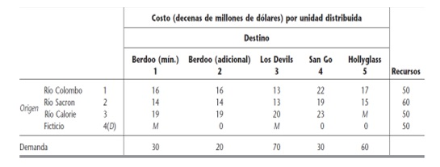
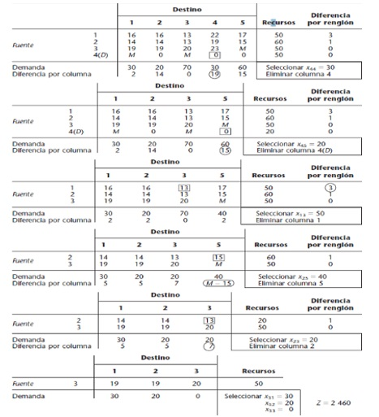

Comience por calcular para cada renglón (y columna) una “penalización” igual a la diferencia entre los dos costos más pequeños en el renglón (columna). A continuación, encuentre el renglón o columna con la penalización más grande. Elija la variable básica la variable de este renglón o columna que tiene el costo de envío más pequeño. Asigne la mayor cantidad posible a la celda, cancele un renglón o columna y cambie la oferta o demanda asociada con la variable básica. Ahora, vuelva a calcular las nuevas penalizaciones (utilice sólo celdas que se encuentran en un renglón o columna que se haya cancelado) y repita el procedimiento hasta que sólo quede sin cancelar una celda. Iguale esta variable con la oferta o demanda asociada con la variable y cancele el renglón o columna de la variable. Ahora se tiene una solución básica factible inicial [13].
Ahora se aplicará el procedimiento general al problema del Metro Water District con el criterio del método de aproximación de Vogel para seleccionar la siguiente variable básica en el paso 1. En cada iteración, después de calcular y escribir las diferencias en cada renglón y columna que quedan bajo consideración, se encierra en un círculo la mayor de ellas y se enmarca en un cuadro el costo unitario menor en ese renglón o columna. La variable con este costo unitario menor se selecciona como la siguiente variable básica y su valor se indica en la esquina inferior derecha de la tabla actual, junto con el renglón o columna que se elimina (vea los pasos 2 y 3 del procedimiento general). La tabla de la siguiente iteración es la misma, pero se elimina este renglón o columna y se resta la cantidad asignada de la demanda o los recursos correspondientes (cualesquiera que sean los sobrantes).
La aplicación de este procedimiento al problema del Metro Water District resulta en la serie de tablas de parámetros que se muestran en la siguiente tabla:
En donde la solución básica factible inicial consiste en las ocho variables básicas (asignaciones) dadas en la esquina inferior derecha de las tablas de parámetros respectivas. Este ejemplo ilustra dos características sutiles del procedimiento general que merecen atención especial. Primero, observe que la iteración final elige tres variables (x31, x32 y x33) para entrar a la base, en lugar de una sola que se elige en las iteraciones anteriores. La razón es que en este punto queda sólo un renglón (el renglón 3) sin eliminar. Por tanto, el procedimiento impone que se deben seleccionar como básicas todas las variables restantes asociadas con el renglón 3.
Segundo, observe que la asignación x23 = 20 en la penúltima iteración agota tanto los recursos restantes de ese renglón como la demanda que queda en esa columna. Sin embargo, en lugar de eliminar los dos, el paso 3 dispone que se elimine sólo el renglón y se deje la columna para que más tarde proporcione una variable básica degenerada. En realidad, la columna 3 se usa para este propósito en la iteración final cuando se selecciona x33 = 0 como una de las variables básicas.
Aunque una asignación de cero puede parecer irrelevante, en realidad juega un papel importante,
pues el método simplex de transporte debe conocer todas las m+n - 1 variables básicas, incluso aquellas que tienen un valor de cero, que constituyen la solución básica factible actual.
Ejemplo:
METRO WATER DISTRICT es una dependencia que administra la distribución de agua en cierta región geográfica grande. La región es bastante árida, por lo que el distrito debe comprar y traer agua del exterior. Las fuentes de esta agua importada son los ríos Colombo, Sacron y Calorie. El distrito revende el agua a los usuarios de la región. Sus clientes principales son los departamentos de aguas de las ciudades de Berdoo, Los Devils, San Go y Hollyglass. Es posible hacer llegar agua a cualquiera de estas ciudades desde cualquiera de los tres ríos, con la excepción de que no hay forma de abastecer a Hollyglass con agua del río Calorie. Sin embargo, dada la distribución geográfica de los acueductos y las ciudades en la región, el costo del abastecimiento del distrito depende tanto de la fuente como de la ciudad a la que abastece. Enla tabla se dan los costos variables por acre-pie de agua —en decenas de dólares— para cada combinación de río y ciudad. A pesar de estas variaciones, el precio que el distrito cobra por acrepie es independiente de la fuente de agua y es el mismo para todas las ciudades.
La administración del distrito tiene que resolver el problema de cómo asignar el agua disponible durante el próximo verano. En la tabla se proporcionan las cantidades disponibles en los tres ríos, en unidades de un millón de acres-pie. El distrito se compromete a proporcionar una cantidad mínima para cumplir con las necesidades esenciales de cada ciudad —con la excepción de San Go, que tiene una fuente independiente de agua—; estas necesidades mínimas se muestran en el renglón correspondiente de la tabla. El renglón de solicitado indica que Los Devils no quiere más agua que la que cubre sus necesidades mínimas, pero Berdoo compraría hasta 20 más, San Go hasta 30 más y Hollyglass compraría toda la que pudiera obtener.
La administración desea asignar toda el agua disponible de los tres ríos de manera que por lo menos se cumpla con las necesidades mínimas de cada ciudad y al mismo tiempo se minimice el costo total para el distrito.
Tabla con costos y requerimientos del Metro Water District

Elaboración propia
Siguiendo los pasos del algoritmo encontramos la siguiente solución básica factible inicial por el método de Vogel:

Elaboración propia
El método de aproximación de Vogel ha sido el más popular durante muchos años, en parte porque es relativamente fácil hacerlo a mano. Este criterio toma en cuenta los costos unitarios en forma eficaz, puesto que la diferencia representa el mínimo costo adicional en que se incurre por no hacer una asignación en la celda que tiene el menor costo en esa columna o renglón [14].